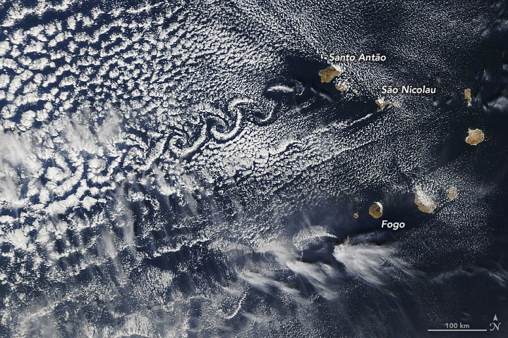

Basic Equations and Concepts
Basic Equations and Concepts¶
This week we will introduce some basic concepts and descibe some simple fluid behaviors. Much of this, particularly the basic equations, will be described more rigorously down the line.
The natural place to start is with the question “What is a fluid?”. But before this, unde the assumption that things you think are fluids are a proper subset of things that are fluids, let us look at some examples with behavior we will try to explain.
A swimming dog taken from).

(Not in fact my dog, but a dead ringer for him). Here you can see a kind of wavefront bounding a wake arcing out from and behind the dog, and choppier water behind him.
Capillary waves emanating from a small disturbance:
In this case the surface tension is an important aspect of the dynamics. Note the wavelengths decrease with distance.
“Gravity waves” emanating from a larger disturbance.
Watch the wave emanating from the #HungaTongaHungaHaapai eruption initiate new convection #volcanology #meteorology pic.twitter.com/KhrhBD3NVs
— Stu Ostro (@StuOstro) January 17, 2022
As Brad Marston pointed out:
Like how one can see both the fast-moving non-dispersive pressure wave moving at the speed of sound, and the dispersive gravity waves near the tropopause.
— Brad Marston (@Brad_Marston) January 17, 2022
(As you can see from the followon discussions the statement that convection is being initiated is questionable, but certainly Brad’s point stands).
Generation and movement of vortices. Here is a picture (from of vortices in atmospheric flow (imprinting on the clouds) past islands in the Cape Verde archipelago:

These are all phenomena we will discuss in this course.